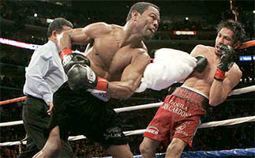

The popularity of the towel stems from its wide variety of uses. The power of its absorbency, the softness of its fabric, the body length, the fullness of its coat—all attribute to the towel's functionality. Some common uses include the following:
- Cleaning a new-born baby (the first fabric an average baby touches is a towel!)
- Drying a body after a bath or shower (often a woman will use a towel to put her hair up after a shower)
- Wrapping around the body in a sauna
- Laying down at a beach to mark territory or to sun tan on as long as its sunny (wear sun protection)
- Towel snapping in locker rooms or at parties
- Covering of naughty bits during massage
- For aesthetic purposes on cruises and hotels, attendants will sometimes construct various animals using towels to please the customer and get a bigger tip
- Coaches throw a towel into a boxing ring to signal the forfeit of a match
- And more!
Images: groveparkinn.com, jacknsteve.com, and timbeaux.com